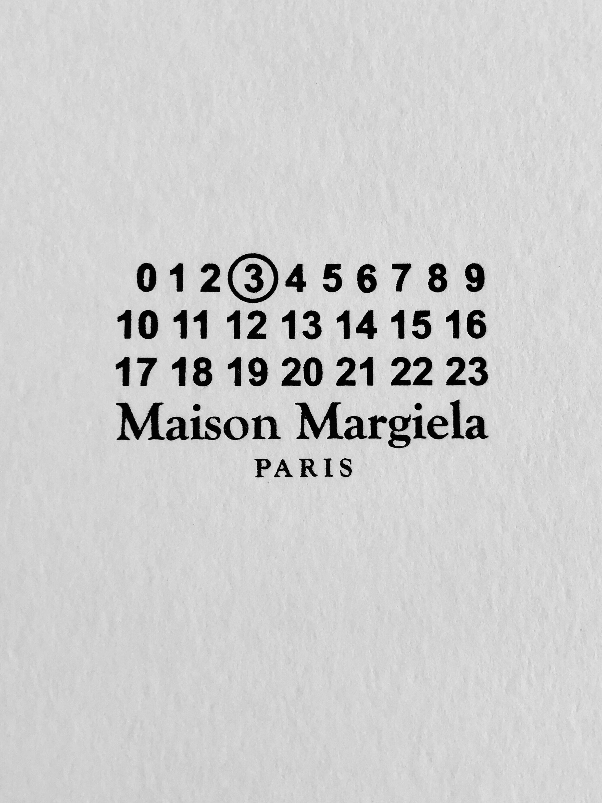
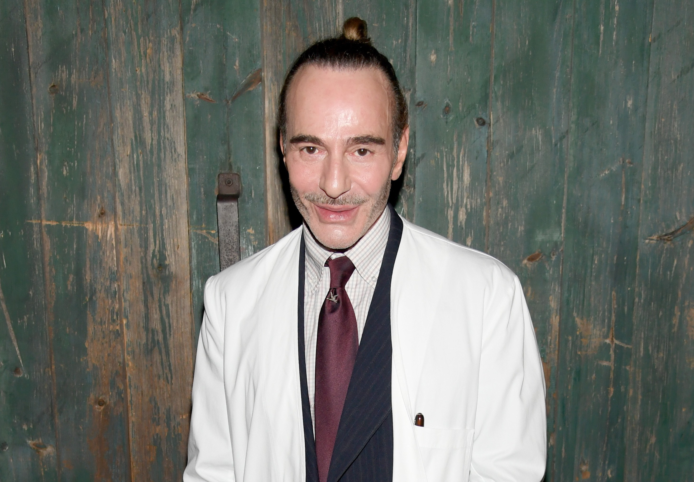
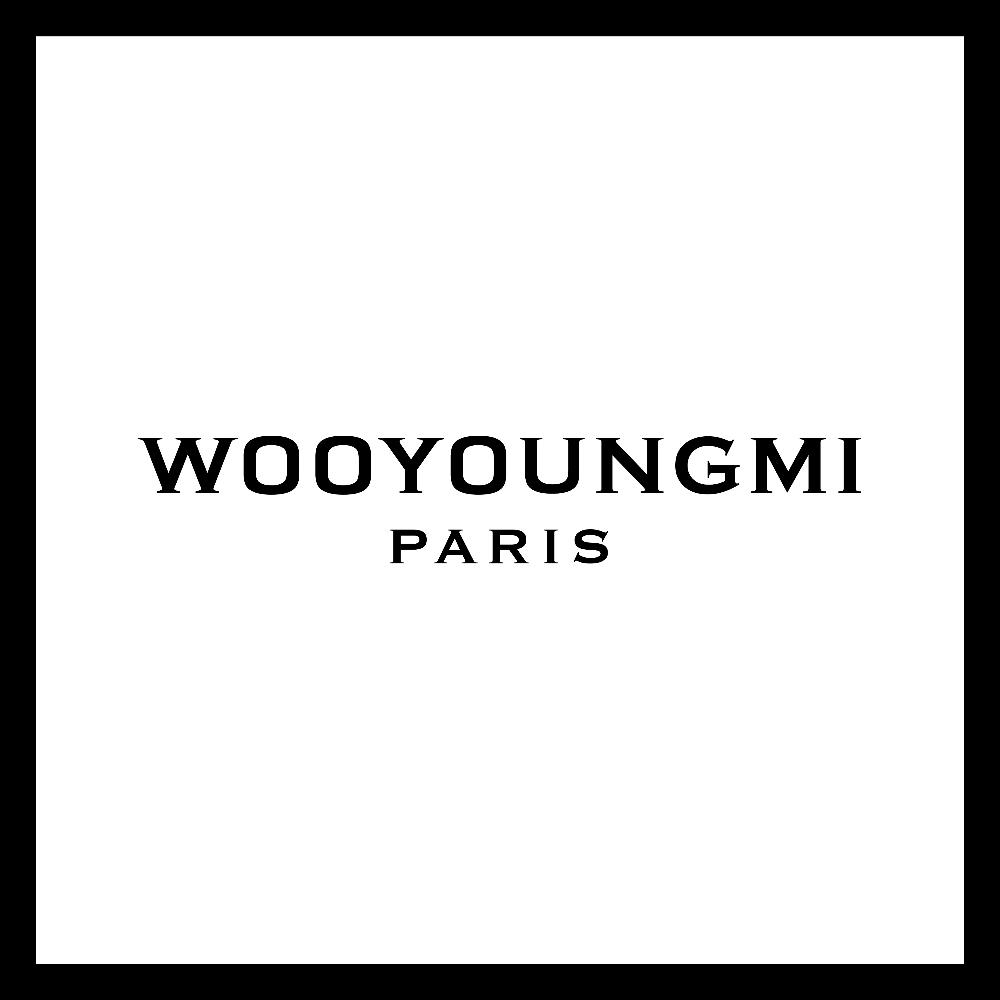
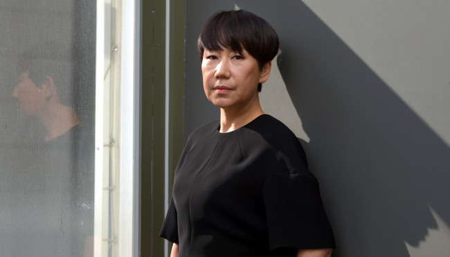
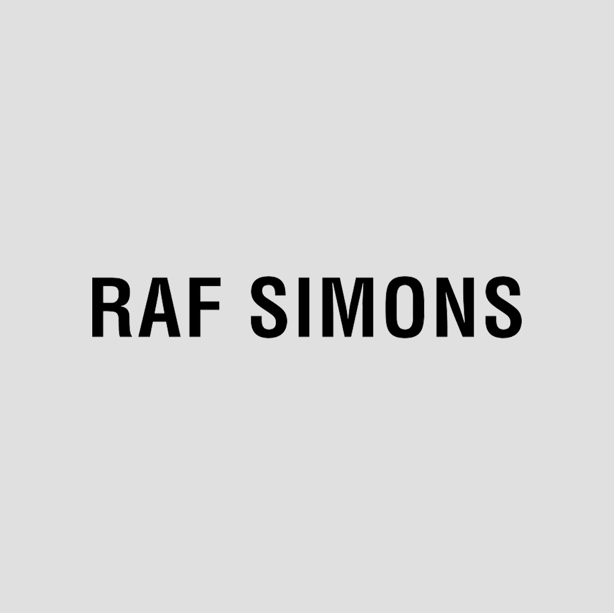
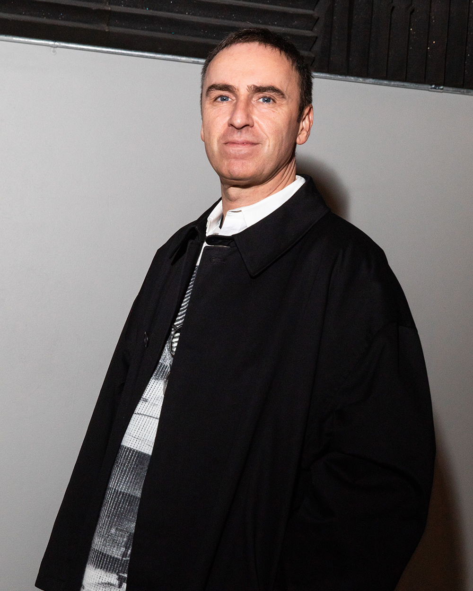

I would like to intrduce my favorite brands and their designers.

Maison Margiela is one of the best brand I like. Their pieces are like artworks. Deconstruction is their motive.

John Galiano

Wooyoungmi is the first Korean brand which joined Chambre Syndicale de la Couture Parisienne.

Young-mi Woo

Raf Simons loves over-sized wears. Some people might think it is too much, but I love the fits.

Raf Simons